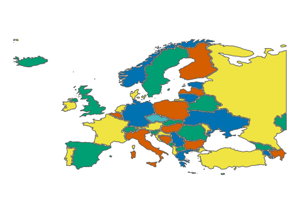

Entities of Europe
We use List of states and territories from https://en.wikipedia.org/wiki/Europe with names from rnaturalearth.
library(tidyverse)
## ── Attaching packages ─────────────────────────────────────── tidyverse 1.3.2 ──
## ✔ ggplot2 3.3.6 ✔ purrr 0.3.4
## ✔ tibble 3.1.8 ✔ dplyr 1.0.9
## ✔ tidyr 1.2.0 ✔ stringr 1.4.1
## ✔ readr 2.1.2 ✔ forcats 0.5.1
## ── Conflicts ────────────────────────────────────────── tidyverse_conflicts() ──
## ✖ dplyr::filter() masks stats::filter()
## ✖ dplyr::lag() masks stats::lag()
library(sf)
## Linking to GEOS 3.9.1, GDAL 3.4.3, PROJ 7.2.1; sf_use_s2() is TRUE
library(rnaturalearth)
sovereignties <- c(
"Albania", "Andorra", "Armenia", "Austria", "Azerbaijan", "Belarus", "Belgium",
"Bosnia and Herzegovina", "Bulgaria", "Croatia", "Cyprus", "Czech Republic",
"Denmark", "Estonia", "Finland", "France", "Georgia", "Germany", "Greece",
"Hungary", "Iceland", "Ireland", "Italy", "Kazakhstan", "Kosovo", "Latvia",
"Liechtenstein", "Lithuania", "Luxembourg", "Macedonia", "Malta", "Moldova",
"Monaco", "Montenegro", "Netherlands", "Norway", "Poland", "Portugal",
"Republic of Serbia", "Romania", "Russia", "San Marino", "Slovakia", "Slovenia",
"Spain", "Sweden", "Switzerland", "Turkey", "Ukraine", "United Kingdom", "Vatican")
europe <- ne_countries(scale = "medium", returnclass = "sf", sovereignty = sovereignties) %>%
select(sovereignt)
# natural map
europe %>% ggplot() +
geom_sf() +
coord_sf(xlim = c(-23, 40), ylim = c(33, 70))

Dropping CRS
To make negative offset we need to drop Coordinate System and clear the geometries.
result <- st_sfc() %>% st_sf()
for (sovereignty in sovereignties) {
inx_dxf <- tempfile("inx_", fileext = c(".dxf"))
europe %>% filter(sovereignt == sovereignty) %>%
st_geometry() %>%
st_write(dsn = inx_dxf, driver ="DXF", quiet = TRUE)
row <- st_read(inx_dxf, quiet = TRUE) %>% select(geometry) %>% st_union() %>% st_sfc() %>%
st_sf() %>% mutate(sovereignt = sovereignty)
result <- result %>% bind_rows(row)
}
row <- result %>% filter(sovereignt %in% c("Kosovo", "Republic of Serbia")) %>% st_union() %>%
st_cast("LINESTRING") %>% nth(1) %>%
st_polygonize() %>% first() %>% st_sfc() %>% st_sf() %>% mutate(sovereignt = "Republic of Serbia")
result <- result %>% filter(!sovereignt %in% c("Kosovo", "Republic of Serbia")) %>% bind_rows(row)
We need crop the map to cover desired territory.
row <- matrix(c(-23, 33,
-23, 71,
50, 71,
50, 33,
-23, 33),ncol=2, byrow=TRUE) %>%
list() %>% st_polygon() %>% st_sfc() %>% st_sf()
result <- result %>%
st_intersection(row)
## Warning: attribute variables are assumed to be spatially constant throughout all
## geometries
result %>%
ggplot() +
geom_sf()

Now we can offset shapes with buffer
result <- result %>% mutate(geometry = st_buffer(geometry, dist = -.1)) %>%
mutate(geometry = st_simplify(geometry)) %>%
mutate(area = st_area(geometry)) %>%
filter(area > 0.1)
result %>% ggplot() +
geom_sf()

Colouring map
We use list from https://en.wikipedia.org/wiki/List_of_countries_and_territories_by_land_and_maritime_borders to define verices and nodes of our network.
library(igraph)
library(visNetwork)
json <- jsonlite::fromJSON("neighbours.json")
countries <- json %>% select(country) %>% pull()
neighbours <- tibble()
for (cnt in countries) {
row <- json %>% filter(country == cnt) %>% select(neighbours) %>% pull() %>%
first() %>% mutate(country = cnt)
neighbours <- neighbours %>% bind_rows(row)
}
d <- neighbours %>% select(country, neighbour)
vertices <- union(neighbours %>% select(country) %>% distinct() %>% pull(),
neighbours %>% select(neighbour) %>% distinct() %>% pull())
igraph_network <- graph_from_data_frame(d = d, vertices = vertices, directed = F)
plot(igraph_network)

data <- toVisNetworkData(igraph_network)
visNetwork(nodes = data$nodes, edges = data$edges, height = "500px")
data$nodes <- greedy_vertex_coloring(
igraph_network,
heuristic = c("colored_neighbors")) %>%
tibble(label = names(.),
col_id = .) %>%
left_join(tibble(col_id = c(1:5),
color = c("#f0e442ff", "#009e73ff", "#d55e00ff", "#0072b2ff", "#44b9bfff"))) %>%
select(label, color) %>% mutate(id = label)
data$edges <- neighbours %>% rename(from = country, to = neighbour) %>%
mutate_at(c('type'), ~replace_na(., "B")) %>%
left_join(tibble(type = c("B", "M", "L"),
color = c("red", "blue", "green")))
visNetwork(nodes = data$nodes, edges = data$edges, width = "1000px", height = "1000px") %>%
visOptions(highlightNearest = TRUE, nodesIdSelection = TRUE)
europe <- result %>% left_join(data$nodes %>% select(c('color', 'id')) %>% rename(sovereignt = id))
plot <- europe %>% ggplot() +
geom_sf(aes(fill = color)) +
scale_fill_identity() +
theme_void()
ggsave(filename = "R_Drawn_Map_of_Europe.svg", plot = plot)

The colouring is not minimal beacuse we use 5 colours.
{kind=link}